In this project, I utilized the DeepFloyd IF diffusion model to explore text-to-image generation and manipulation.
To ensure reproducibility across all subsequent experiments, I fixed the random seed to 42.
I selected three distinct text prompts covering different domains—photorealism, oil painting, and watercolor—to evaluate the model's versatility in handling various artistic styles.
For each prompt, I generated outputs using two different inference step counts: 25 and 75, to analyze the impact of sampling duration on image quality.
The generated outputs demonstrate strong semantic alignment with the text prompts, capturing both the subjects and the requested artistic styles accurately.
Comparing the results, the visual difference between 25 and 75 inference steps is actually quite subtle.
The images generated with 25 steps are already high quality, indicating that the model converges relatively quickly.
Upon very close inspection, the 75-step images exhibit marginally less noise and slightly more refined high-frequency details.
For instance, the fur texture on the "cute cat" appears just a fraction sharper in the 75-step version.
Similarly, the "oil painting" and "watercolor" examples show slightly smoother color transitions with the extended steps.
Overall, while 75 steps provide a slight theoretical improvement, 25 steps are sufficient to produce coherent and visually pleasing results for these prompts.
Prompt used:"a high quality photo of a cute cat",
"an oil painting of an old man",
"a watercolor painting of a cozy cottage in a forest"
Comparison: Step 25 vs Step 75
Cat (Step 25)Cat (Step 75)
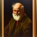
Old Man (Step 25)Old Man (Step 75)
Cottage (Step 25)Cottage (Step 75)
Part 1.1: The Forward Process
The forward process involves progressively adding Gaussian noise to a clean image.
Instead of adding noise iteratively step-by-step, we can jump directly to any timestep t using a closed-form formula.
I implemented the forward function to scale the original image by the square root of alpha_cumprod and add random noise scaled by the remaining variance.
def forward(im, t, seed=None):
"""
Adds Gaussian noise to image im at time step t
Formula: x_t = sqrt(alpha_bar_t) * x_0 + sqrt(1 - alpha_bar_t) * epsilon
"""
t_idx = int(t)
alpha_bar_t = alphas_cumprod[t_idx].view(1, 1, 1, 1)
if seed is not None:
torch.manual_seed(seed)
noise = torch.randn_like(im)
noisy_im = torch.sqrt(alpha_bar_t) * im + torch.sqrt(1 - alpha_bar_t) * noise
return noisy_im
The results below visualize the effect of this noise addition on the Berkeley Campanile.
At t=250, the image is noisy but the structure of the tower remains clearly visible.
As the timestep increases to t=500, the details become heavily obscured by the grain.
Finally, at t=750, the signal is largely overpowered, and the image is nearly indistinguishable from pure Gaussian noise.
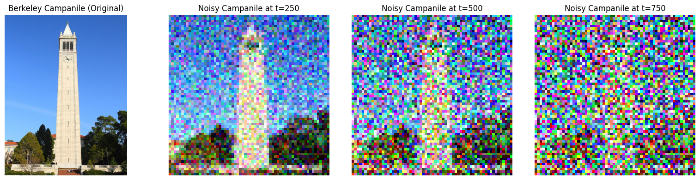
Noisy Images at t = [250, 500, 750]
Part 1.2: Classical Denoising
Gaussian blur acts as a low-pass filter, smoothing out pixel intensity variations to reduce high-frequency noise.
As shown in the results below, this classical method faces a significant trade-off.
At lower noise levels (t=250), the filter removes some grain but simultaneously blurs distinct edges and architectural details.
At higher noise levels (t=500 and t=750), the signal is so heavily corrupted that Gaussian blur merely produces a smudge, failing to recover any meaningful structural information.
This demonstrates the limitations of purely spatial filtering for denoising complex signals compared to generative approaches.
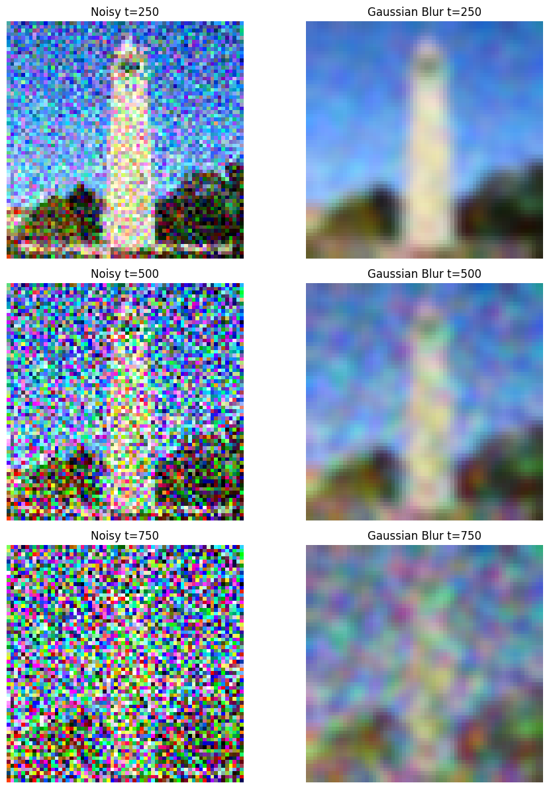
Gaussian Blur Denoising Results
Part 1.3: One-Step Denoising
In this section, I utilized the pre-trained UNet (`stage_1.unet`) to denoise the image.
The model takes the noisy image, the current timestep t, and a text prompt embedding ("a high quality photo") as inputs to estimate the noise component.
By rearranging the forward diffusion formula, we can attempt to subtract this estimated noise and recover the original image $x_0$ in a single step.
The results below visualize the original image, the noisy version, and the one-step estimate across three noise levels.
At a low noise level (t=250), the model successfully reconstructs the geometry and colors of the Campanile, though the texture appears smoother than the original.
However, as the noise increases to t=500 and t=750, the limitations of one-step denoising become apparent.
While the model recovers the global structure—the vertical tower shape against a blue sky—it fails to hallucinate high-frequency details like bricks or windows.
The output resembles a blurred "average" of possible images.
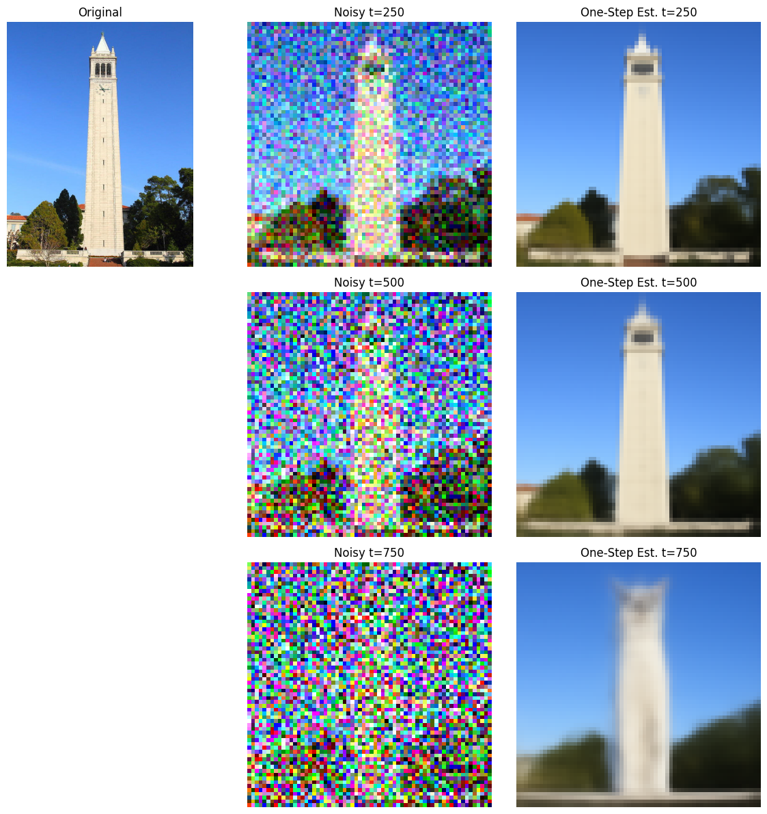
One-Step Reconstruction Results
Part 1.4: Iterative Denoising
While one-step denoising fails to recover fine details, diffusion models excel when allowed to denoise iteratively.
The core idea is to break the reverse process into many small steps.
Instead of jumping from $x_t$ to $x_0$ immediately, we estimate a slightly less noisy image $x_{t-1}$ at each step.
To make this efficient, I implemented strided sampling.
Instead of running all 1000 steps, I utilized a schedule that skips steps (stride=30), effectively speeding up inference while maintaining high quality.
The iterative update rule combines the predicted clean image estimate ($x_0$) with the current noisy image ($x_t$) and adds a small amount of random variance to maintain the stochastic nature of the process.
def iterative_denoise(im_noisy, i_start, prompt_embeds, timesteps, display=True):
"""
Performs iterative denoising starting from a given noisy image and time step index.
"""
image = im_noisy
intermediate_images = []
titles = []
with torch.no_grad():
for i in range(i_start, len(timesteps) - 1):
t = timesteps[i]
prev_t = timesteps[i+1]
alpha_cumprod_t = alphas_cumprod[t]
alpha_cumprod_prev_t = alphas_cumprod[prev_t]
alpha_t = alpha_cumprod_t / alpha_cumprod_prev_t
beta_t = 1 - alpha_t
model_input = image.to(device=device, dtype=torch_dtype)
model_output = stage_1.unet(
model_input,
t,
encoder_hidden_states=prompt_embeds,
return_dict=False
)[0]
# Split output: first 3 channels are noise, last 3 are variance
noise_est, predicted_variance = torch.split(model_output, image.shape[1], dim=1)
# x_0_hat = (x_t - sqrt(1 - alpha_bar_t) * noise_est) / sqrt(alpha_bar_t)
alpha_bar_t_reshaped = alpha_cumprod_t.view(1, 1, 1, 1)
x0_hat = (image - torch.sqrt(1 - alpha_bar_t_reshaped) * noise_est) / torch.sqrt(alpha_bar_t_reshaped)
x0_hat = torch.clamp(x0_hat, -1, 1)
# Term 1: Coeff for x0_hat = sqrt(alpha_bar_{t-1}) * beta_t / (1 - alpha_bar_t)
coeff_x0 = torch.sqrt(alpha_cumprod_prev_t) * beta_t / (1 - alpha_cumprod_t)
# Term 2: Coeff for x_t = sqrt(alpha_t) * (1 - alpha_bar_{t-1}) / (1 - alpha_bar_t)
coeff_xt = torch.sqrt(alpha_t) * (1 - alpha_cumprod_prev_t) / (1 - alpha_cumprod_t)
coeff_x0 = coeff_x0.view(1, 1, 1, 1)
coeff_xt = coeff_xt.view(1, 1, 1, 1)
pred_prev_image = coeff_x0 * x0_hat + coeff_xt * image
# Add variance
if prev_t > 0:
t_tensor = torch.tensor(t, device=device)
pred_prev_image = add_variance(predicted_variance, t_tensor, pred_prev_image)
image = pred_prev_image
if display and i % 5 == 0:
pil_img = deprocess_image(image)
save_path = os.path.join(RESULTS_DIR_1_4, f"iterative_step_{i}_t{t}.png")
pil_img.save(save_path)
intermediate_images.append(pil_img)
titles.append(f"Iterative Step {i} (t={t})")
print(f"Saved intermediate image at step {i} (t={t})")
# Final image at t=0
clean_tensor = image
clean_pil = deprocess_image(clean_tensor)
save_path = os.path.join(RESULTS_DIR_1_4, "final_iterative_clean.png")
clean_pil.save(save_path)
print(f"Saved final iteratively denoised image to {save_path}")
return clean_pil, intermediate_images, titles
The first strip below visualizes the iterative process.
Starting from a very noisy state at t=690, we can see the Campanile gradually emerging from the noise.
By step 15 (t=540) and step 20 (t=390), the structure becomes solid, and by the final steps, the fine details are sharpened.
The second strip compares the final results of all methods tested so far.
The Gaussian Blur(far right) is too blurry to be useful.
The One-Step Denoised version (middle right) captures the global structure but remains smooth and lacks texture.
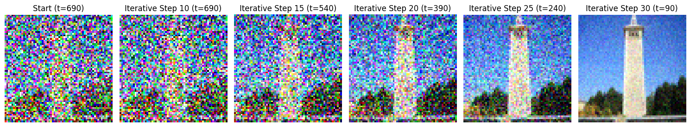
Strided Denoising Process
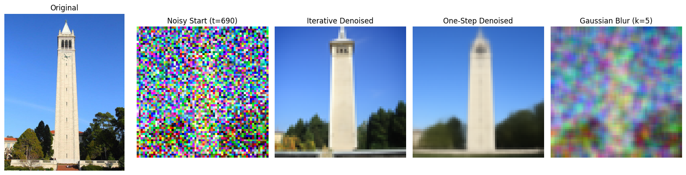
Final Comparison: Original vs Iterative Denoised
Part 1.5: Diffusion Model Sampling
Building on the iterative denoising framework, we can generate entirely new images from scratch.
Instead of starting with a noisy version of an existing image, I initialized the process with pure random Gaussian noise and set the starting timestep index to 0.
This allows the diffusion model to hallucinate a completely new scene, guided only by the text embedding.
The results below display five distinct samples generated with the generic prompt "a high quality photo".
Since the prompt imposes very few semantic constraints, the model produces a diverse range of subjects, varying from portraits to landscapes and objects.
Despite starting from unstructured noise, the final outputs exhibit coherent structures, realistic textures, and natural lighting, demonstrating the model's capability to effectively sample from the learned distribution of natural images.
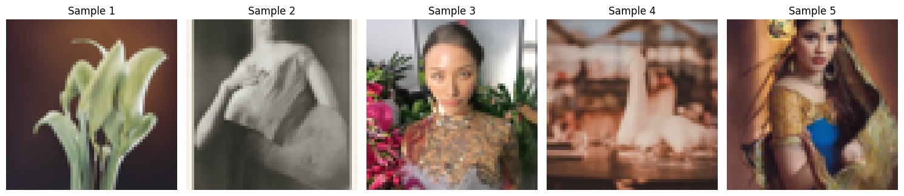
Generated Samples from Scratch
Part 1.6: Classifier-Free Guidance (CFG)
In Part 1.5, the generated samples were diverse but often lacked visual coherence or strictly adhered to the "high quality" descriptor.
To significantly improve image fidelity, I implemented Classifier-Free Guidance (CFG).
The core idea is to compute two noise estimates at each step: a conditional estimate $\epsilon_c$ (guided by the prompt) and an unconditional estimate $\epsilon_u$ (guided by an empty string "").
By taking the difference between these two and scaling it by a factor $\gamma$ (guidance scale), we can amplify the features that correspond to the text prompt while suppressing generic noise.
The modified noise prediction is given by: $\epsilon = \epsilon_u + \gamma (\epsilon_c - \epsilon_u)$.
For this experiment, I used a guidance scale of $\gamma = 7$.
The strip below shows 5 samples generated with CFG.
Compared to the non-guided samples in Part 1.5, these images exhibit dramatically higher saturation, sharper contrast, and more recognizable subjects.
The "high quality photo" prompt is much more effectively realized—portraits look realistic rather than hazy, and objects have distinct boundaries.
This confirms that CFG is essential for generating photorealistic content with diffusion models.
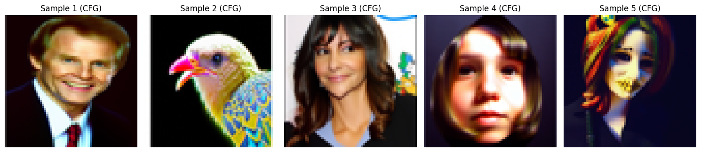
Generated Samples with CFG
Part 1.7: Image-to-Image Translation (SDEdit)
In this section, I implemented the SDEdit algorithm.
The core idea is to take an existing image, add a specific amount of noise to it (bringing it to timestep $t$), and then run the iterative denoising process from that point onwards.
This allows us to "edit" the image: the model uses the noisy image as a structural guide while generating details based on the generic prompt "a high quality photo".
The parameter i_start controls the starting noise level (where index 1 corresponds to very high noise near t=960, and index 20 corresponds to lower noise near t=390).
The results demonstrate a clear trade-off between creativity and fidelity:
High Noise (i_start = 1, 3, 5): The original signal is heavily corrupted. The model has significant freedom to hallucinate new structures. For instance, in the Campanile example, the tower transforms into a surreal face or a modern skyscraper at high noise levels.
Low Noise (i_start = 10, 20): The original signal is largely preserved. The model acts more like a "denoiser," projecting the image onto the manifold of natural images without altering its semantic content. The Campanile returns to its original recognizable form.
This behavior is consistent across the custom test images (Cat and Sphere) as well: higher noise leads to drastic reinterpretation, while lower noise preserves the original identity.
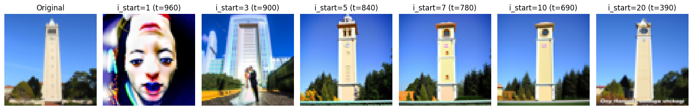
Campanile Edits
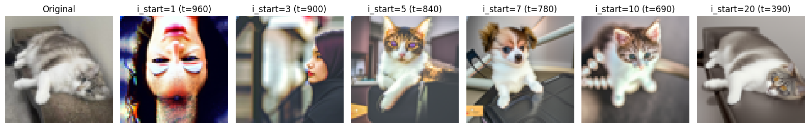
Cat EditsSphere Edits
Part 1.7.1: Editing Hand-Drawn and Web Images
Expanding on the SDEdit technique, I applied the procedure to non-photorealistic inputs (hand-drawn sketches) and an image downloaded from the web.
The goal was to test the model's ability to interpret crude visual signals and transform them into photorealistic outputs based on a text prompt.
At High Noise Levels ($i\_start=1, 3$, corresponding to $t \approx 960$):
The results are completely unrelated to the original drawing and highly imaginative.
Because the noise is so strong, the original structural information (the shape of the fruit or the dog) is entirely wiped out.
The model, guided only by the prompt "a high quality photo", hallucinates random subjects that fit the description—turning a fruit sketch into a realistic woman's face, or a dog into a landscape.
It effectively ignores the input and generates a random image from scratch.
At Low Noise Levels ($i\_start=10, 20$, corresponding to $t \approx 390$):
The generation becomes much more faithful.
The original colors and shapes are preserved, and the model simply projects the sketch onto the manifold of natural images.
The "Fruit" sketch looks like textured oranges, and the "Dog" retains its specific breed and pose.
This confirms that for SDEdit to act as an "editor" rather than a "generator," the noise level must be carefully bounded.
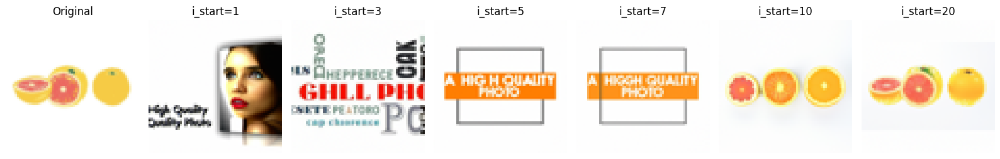
Drawing to Photo: Fruit
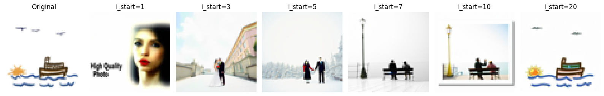
Drawing to Photo: Sea
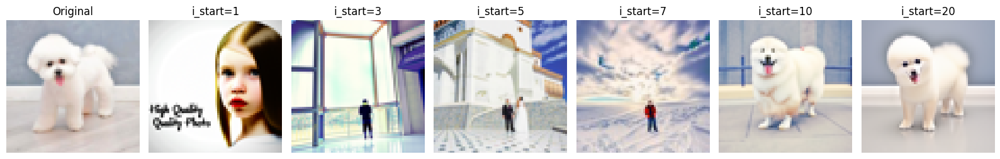
Web Image Edit: Dog
Part 1.7.2: Inpainting
Inpainting is the process of reconstructing missing or masked regions of an image.
I implemented the RePaint algorithm, which cleverly leverages the diffusion process.
During the iterative denoising loop, we obtain a predicted image $x_{t-1}$ at each step.
To preserve the original context, we enforce a constraint: for pixels outside the edit mask, we discard the model's prediction and simply replace them with the original image (noised to the current timestep $t-1$).
This ensures that the unmasked background remains perfectly faithful to the original, while the masked region is generated by the diffusion model to be semantically consistent with that background.
The results below visualize the inpainting performance.
Campanile: The top of the tower was masked and successfully replaced with a new structure (resembling a colorful balloon or dome) that blends seamlessly with the blue sky.
Cat: A square patch on the cat's body was removed. The model filled the hole with fur texture that matches surrounding coat remarkably well, while the fur color are somehow incompatible with the original cat color
Sphere: The bottom example highlights a limitation. I attempted to inpaint a feature (like an eye) onto the sphere. However, the result appears unnatural—a dark artifact that fails to respect the 3D curvature or lighting of the object. This failure is likely due to the low resolution (64x64), which makes it difficult for the model to resolve precise geometric continuity on smooth surfaces.
In this section, we apply the SDEdit framework to perform text-guided image translation.
Unlike the previous section where we used a generic "high quality" prompt to preserve identity, here we use specific text prompts (e.g., "a rocket ship", "an oil painting of an old man") to steer the generation toward a new semantic category.
The noise level controls the balance between preserving the original spatial layout and adhering to the new text description.
The results illustrate a gradual transition based on the starting noise level:
High Noise ($i\_start = 1, 3$): The text prompt dominates. The visual information from the original image is largely washed out, allowing the model to hallucinate a complete object that matches the text. For example, the Campanile is replaced by a realistic rocket on a launchpad, and the Cat is completely transformed into a portrait of an old man.
Medium Noise ($i\_start = 5, 7$): This is the most visually interesting regime, representing a hybrid state. The structural constraints of the original image (the vertical shape of the tower, the curled-up pose of the cat) force the model to adapt the text prompt to that specific geometry. We see a "rocket" that is shaped exactly like the Campanile, or a "man" whose face and beard are contorted to fit the cat's silhouette.
Low Noise ($i\_start = 10, 20$): The original image signal is too strong to be overridden. The diffusion process acts merely as a texture filter. The rocket reverts to being a stone tower, and the old man fades back into the fur of the cat.
In this section, I implemented Visual Anagrams, creating optical illusions that depict one subject when upright and a completely different subject when flipped 180 degrees.
The method relies on manipulating the diffusion process to satisfy two prompts simultaneously.
At each step of the denoising process, we compute two noise estimates:
1. $\epsilon_1$: Derived from the upright image using Prompt 1 (e.g., "an oil painting of an old man").
2. $\epsilon_2$: Derived from the flipped image using Prompt 2 (e.g., "an oil painting of people around a campfire").
We then flip $\epsilon_2$ back to the upright orientation and average it with $\epsilon_1$.
The resulting noise step moves the image towards both manifolds simultaneously, ensuring the final image is valid in both orientations.
Below are three examples of generated visual anagrams.
Old Man / Campfire: This is a classic illusion. The dark robes and shadows of the "Old Man" transform into the night sky and cave walls of the "Campfire" scene, while the man's face becomes the illuminated ground.
Ocean Wave / Snowy Mountain: This pair leverages the shared color palette of white and blue. The crashing foam of the wave (upright) perfectly mimics the snow-capped peak of a mountain (flipped).
Ocean Wave / Cute Cat: A surprising combination where the chaotic texture of water foam and rock in the sea(upright) are reinterpreted as the fluffy white fur of a cat (flipped).
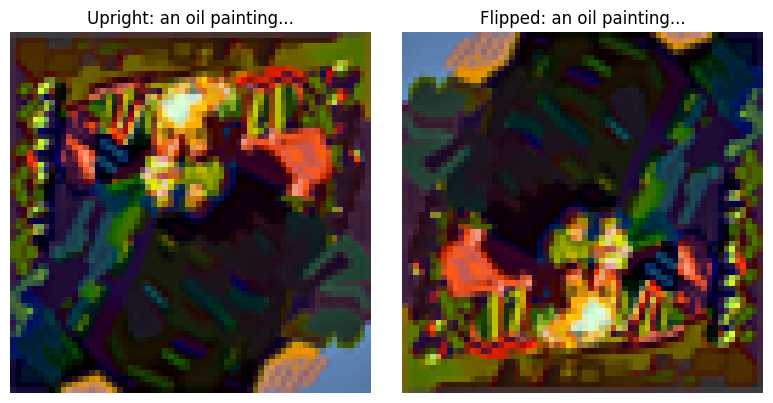
An Old Man / People around a Campfire
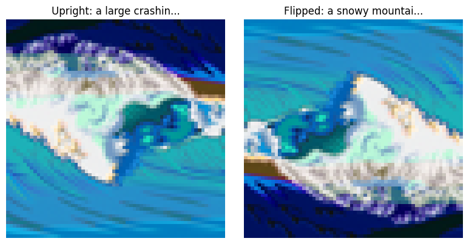
Ocean Wave / Snowy Mountain
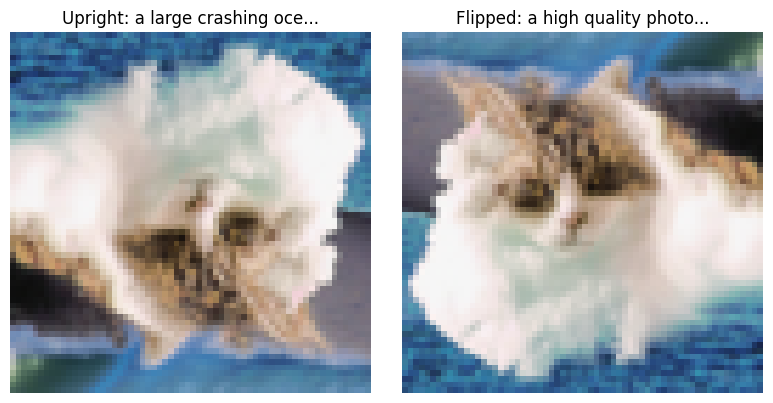
Ocean Wave / Cute Cat
Bells & Whistles: Visual Anagrams
Beyond spatial transformations like flipping, I extended the Visual Anagrams concept to photometric transformations, specifically Color Inversion (Negatives).
The goal is to generate an image that depicts one subject normally, but reveals a completely different subject when its colors are inverted.
The algorithm works by simultaneously denoising the image $x_t$ with Prompt 1 and its negative $-x_t$ with Prompt 2.
Since the diffusion model operates in the pixel range $[-1, 1]$, inverting the image is mathematically equivalent to negating the tensor.
We compute the noise estimate for the inverted image, negate it back, and average it with the normal noise estimate.
# Estimate Noise 2 (Inverted Image)
# In diffusion models (range [-1, 1]), inversion is simply negation
curr_image_inverted = -curr_image
cond_out2 = stage_1.unet(curr_image_inverted, t, encoder_hidden_states=prompt_embeds2)[0]
# ... split noise ...
# The noise predicted for the inverted image must be inverted back
# to be compatible with the original image's noise space
noise_pred2 = -noise_pred2_inverted
# Combine
final_noise_pred = (noise_pred1 + noise_pred2) / 2.0
The result below is a fascinating application of complementary colors and luminance inversion.
Original: "An oil painting of people around a campfire." This scene is characterized by a dark background (night) and a bright, warm (red/orange) center (fire).
Inverted: "A large crashing ocean wave." When inverted, the dark background becomes bright white/light gray (resembling the sky or sea foam), and the bright warm fire becomes a deep cool blue/cyan (resembling the ocean water). The semantic alignment between the two prompts in the negative space creates a perfect illusion.
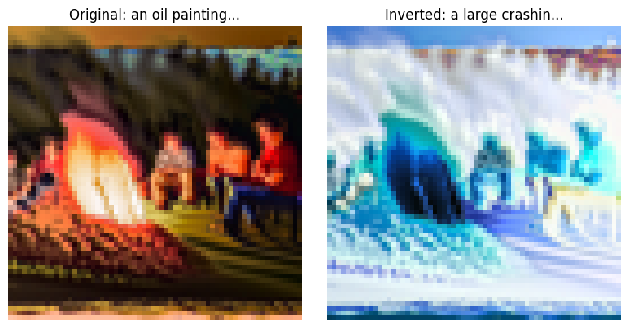
Black & White Flip
Part 1.9: Hybrid Images
In this section, I implemented Factorized Diffusion to create Hybrid Images.
Similar to the classical computer vision technique, the goal is to create an image that looks like one thing from afar (low frequency) and another from up close (high frequency).
Here, we achieve this by mixing the noise estimates directly: $\epsilon = f_{low}(\epsilon_1) + f_{high}(\epsilon_2)$.
The results demonstrate the technique, though they also highlight the limitations of generating hybrid illusions at a low resolution, and under limited parameter tuning.
Old Man + Campfire: The low-frequency silhouette of the "Old Man" (head and shoulders) dictates the overall shape. And the high-frequency details are filled with the warm, chaotic textures of the people. This blending is overall successful except that the "Campfire" is somehow diverge from the center (left bottom corner)
Cat + Man: This attempts to combine the low-frequency structure of a "Man" with the high-frequency texture of a "Cat". The result is structurally accurate to the human pose, but the fusion is somehow unnatural and disjointed. Instead of the man's clothing subtly dissolving into fur texture upon closer inspection, the image appears as if a cat's face was simply pasted onto a human body. The boundary between the cat head and the human suit is stark and distinct, failing to create a cohesive optical illusion.
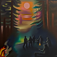
Hybrid: Old Man + CampfireHybrid: Cat + Man
Bells & Whistles:Course Logo
For the final task, I designed a logo for the course "CS 280A".
Instead of using a hand-drawn sketch, I programmatically generated a clean Digital Base Image using the official UCB color palette (Berkeley Blue background and California Gold text) to ensure maximum legibility.
I then applied Text-Conditional SDEdit with a starting noise step of 50. This specific noise level allowed the model to maintain the readable text structure while completely transforming the texture and lighting.
Prompt used:"a futuristic glowing neon logo text 'CS 280A', cyberpunk, green matrix"
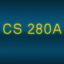
Result: Neon Style
Part B: Diffusion Models from Scratch
Training Flow Matching Models on MNIST
Part 1: Training a Single-Step Denoising UNet
1.1 Implementing the UNet
In this part, I implemented a simple UNet architecture consisting of DownBlocks, UpBlocks, and skip connections.
The model takes a noisy image as input and outputs a prediction of the clean image (or noise, depending on objective).
Standard operations include Conv2d, GELU activation, and GroupNorm/BatchNorm.
1.2 Using the UNet to Train a Denoiser
Before training, we need to visualize the noising process.
By adding Gaussian noise with varying sigma values to clean MNIST digits, we generate the training pairs $(z, x)$.
The visualization below demonstrates the data generation process required to train the single-step denoiser.
Gaussian noise was added to clean MNIST digits according to the equation \(z = x + \sigma \epsilon\),
where \(\epsilon \sim \mathcal{N}(0, I)\).
The grid illustrates the progressive degradation of signal quality as the noise level \(\sigma\) increases from 0.0 to 1.0.
At lower noise levels (e.g., \(\sigma \leq 0.4\)), the structural integrity of the digits remains intact.
However, as \(\sigma\) approaches 1.0, the signal-to-noise ratio decreases significantly, rendering the digits
nearly indistinguishable from the background noise. These generated noisy samples (\(z\)) paired with their
corresponding clean images (\(x\)) form the training dataset used to optimize the L2 loss objective.
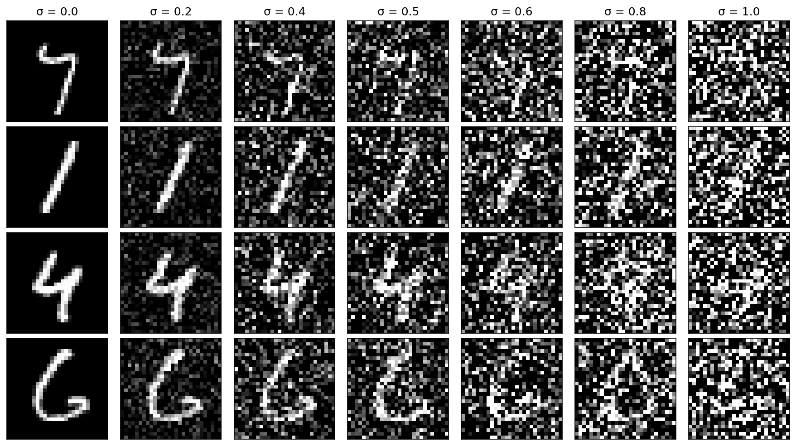
Visualization of the Noising Process ($\sigma = [0.0, 0.2, 0.4, 0.5, 0.6, 0.8, 1.0]$)
1.2.1 Training
The UNet architecture was trained as a single-step denoiser using an L2 loss objective.
The model receives noisy images corrupted with Gaussian noise (\(\sigma = 0.5\)) and learns to map them back to their clean counterparts.
Training was performed for 5 epochs with a batch size of 256 using the Adam optimizer (learning rate \(1\text{e-}4\)).
The loss curve (top) demonstrates rapid convergence within the first epoch, stabilizing quickly.
The visual results (bottom) compare the denoising performance after Epoch 1 and Epoch 5.
While the model effectively removes noise by Epoch 1, the digits become sharper and cleaner by Epoch 5.
This indicate that the network successfully learned to recover high-frequency details from the noisy input \(\sigma = 0.5\).
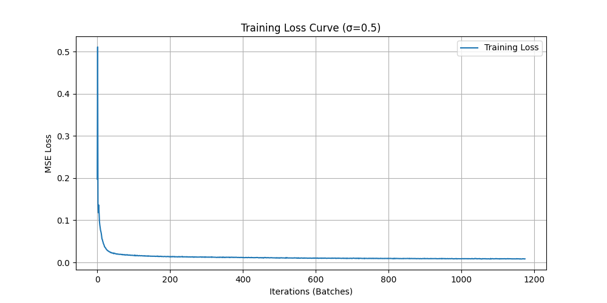
Training Loss Curve (Single-Step Denoiser)
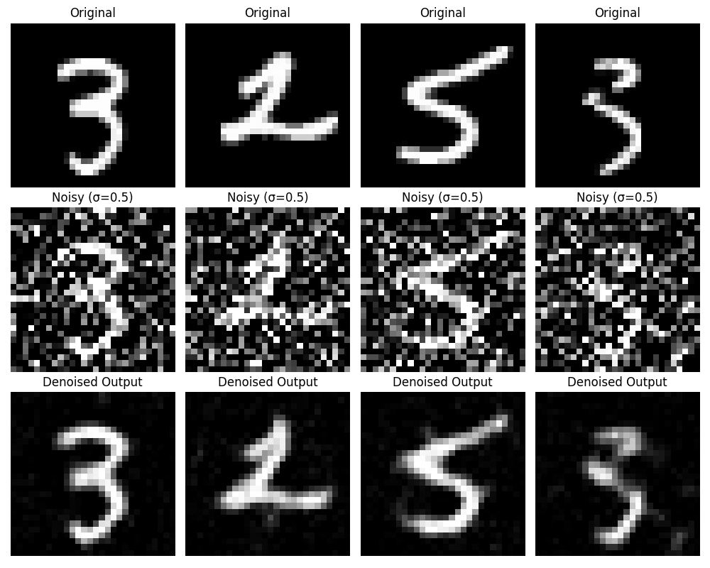
Denoising Results on Test Set (Epoch 1)
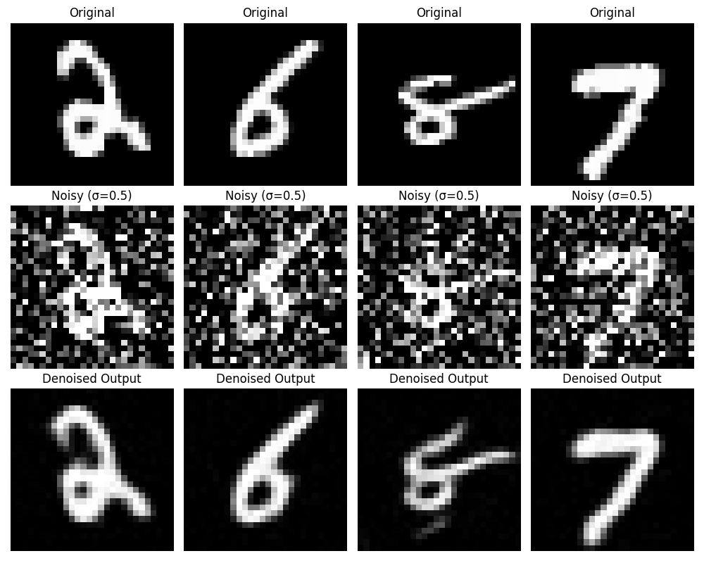
Denoising Results on Test Set (Epoch 5)
1.2.2 Out-of-Distribution Testing
The denoiser was trained exclusively on images with a fixed noise level of \(\sigma = 0.5\).
To evaluate its robustness, we applied the model to a test image corrupted with varying noise levels ranging from \(\sigma = 0.0\) to \(1.0\).
The visualization below shows that the model generalizes well to lower noise levels (\(\sigma < 0.5\)), preserving the digit's structure without introducing significant artifacts.
At the training noise level (\(\sigma = 0.5\)), the reconstruction is sharp. However, as the noise level increases beyond the training distribution (\(\sigma > 0.5\)),
the model struggles to recover the signal.
At \(\sigma = 1.0\), the output becomes blurry and loses distinct features. This is the limitations of the single-step denoiser when facing unseen, high-variance noise.
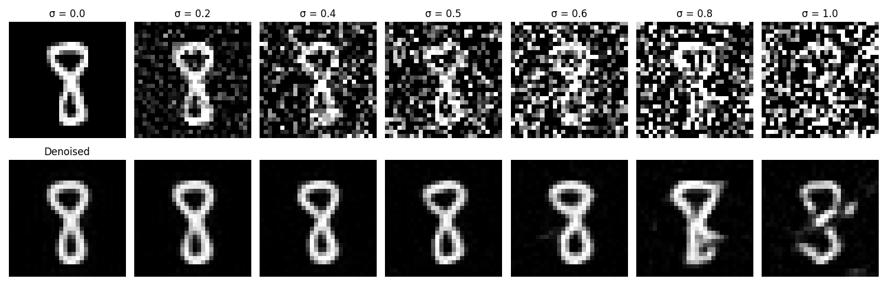
Denoising Performance on Varying Noise Levels
1.2.3 Denoising Pure Noise
In this experiment, we trained the UNet to map pure Gaussian noise (\(\epsilon \sim \mathcal{N}(0, I)\)) directly to clean MNIST digits.
This tests whether a single-step denoiser can function as a generative model.
The qualitative results reveal that the model fails to generate distinct, recognizable digits.
Instead, the outputs appear as blurry, "ghostly" shapes that resemble the average of all MNIST digits overlaid together.
This phenomenon is expected when optimizing an MSE (L2) loss. Mathematically, the optimal prediction that minimizes the sum of squared errors
for a multimodal distribution (like digits 0-9) is the arithmetic mean (centroid) of that distribution.
Since the input is pure noise and provides no structural cues to distinguish between classes, the network converges to predicting
the average image of the entire dataset to minimize the overall loss.
Training Loss (Pure Noise Denoising)
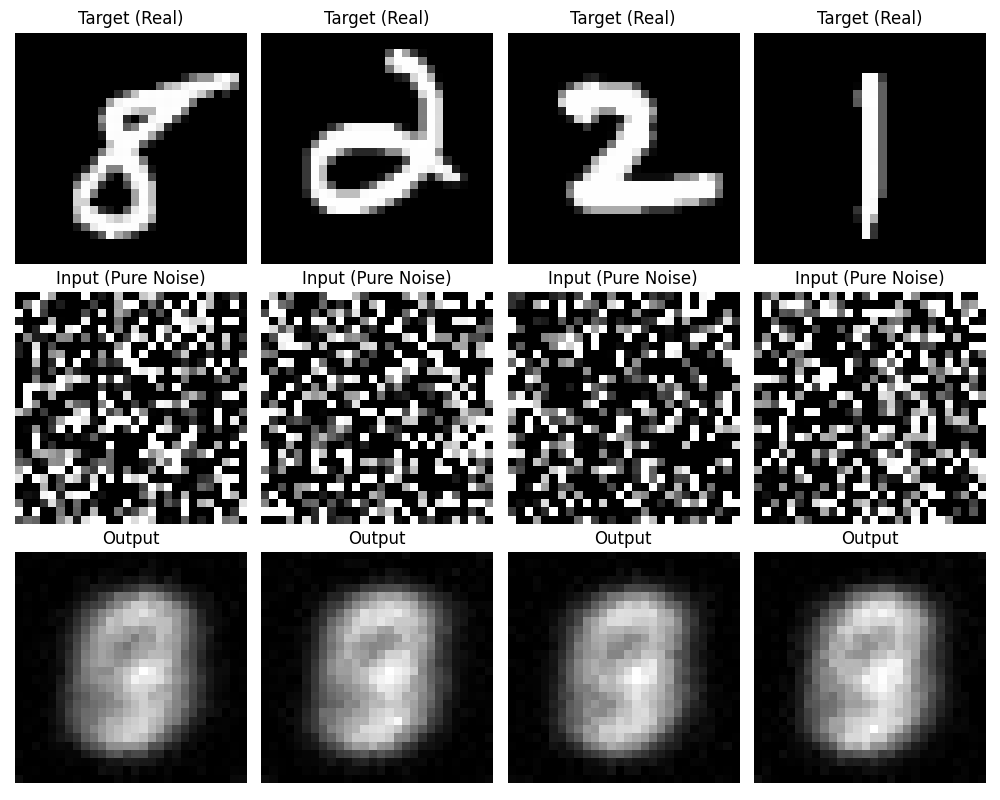
Generative Results from Pure Noise (Epoch 1)
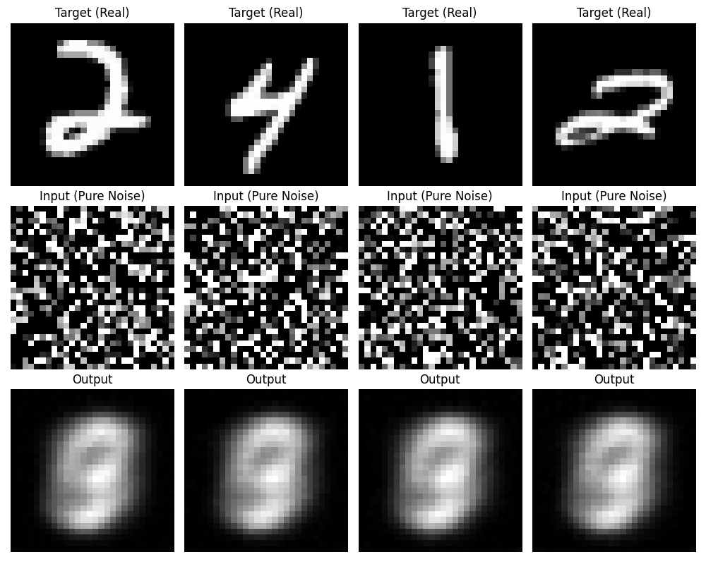
Generative Results from Pure Noise (Epoch 5)
Part 2: Training a Flow Matching Model
Single-step denoising yields blurry results. In this part, I implemented Flow Matching (Iterative Denoising).
Instead of predicting the clean image directly, the UNet predicts the vector field (flow) from noisy data to clean data.
2.2 Training the Time-Conditioned UNet
We trained a time-conditioned UNet to solve the flow matching objective.
Unlike the single-step denoiser, this model learns the velocity field \(v_t = x_1 - x_0\)
to map pure noise \(x_0\) to clean data \(x_1\) over a continuous time interval \(t \in [0, 1]\).
The training process utilized a batch size of 64 and an exponential learning rate scheduler (starting at \(1\text{e-}2\)).
The training loss curve below exhibits significant variance (high-frequency oscillation) compared to the Part 1 denoiser.
This volatility is expected and reasonable for flow matching because the task difficulty varies stochastically per batch.
In each step, we sample random time \(t \sim \text{Uniform}[0,1]\) and random noise \(x_0 \sim \mathcal{N}(0, I)\).
Predicting the flow at \(t=0.1\) (high noise) is fundamentally harder and produces higher error gradients than at \(t=0.9\) (low noise),
leading to the observed fluctuations. Despite the noise, the overall loss trend clearly descends and stabilizes around 0.09.
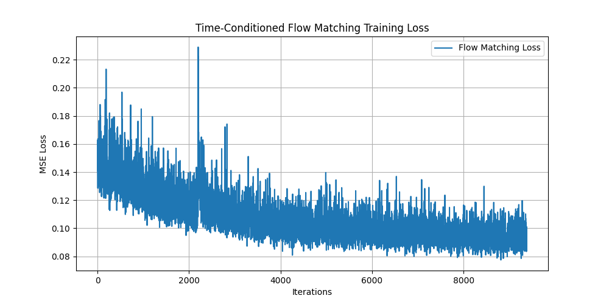
Training Loss (Time-Conditioned UNet)
2.3 Sampling from the Time-Conditioned UNet
To evaluate the generative capabilities of the trained model, we performed iterative denoising using the Euler sampling method.
Starting from pure Gaussian noise \(x_0 \sim \mathcal{N}(0, I)\), we integrated the learned velocity field \(v_\theta(x_t, t)\) over time \(t\) from 0 to 1.
The visualization below illustrates the progression of sample quality across training epochs:
Epoch 1: The generated samples are largely amorphous blobs with vague structures, indicating the model has not yet learned the correct flow trajectories.
Epoch 5: Legible digit structures begin to emerge, though they exhibit significant artifacts, roughness, and discontinuous strokes.
Epoch 10: The samples become sharp, coherent, but some digits still can not clearly recognizable as MNIST digits.
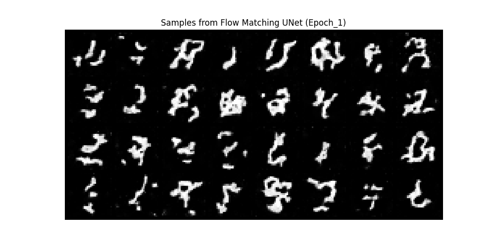
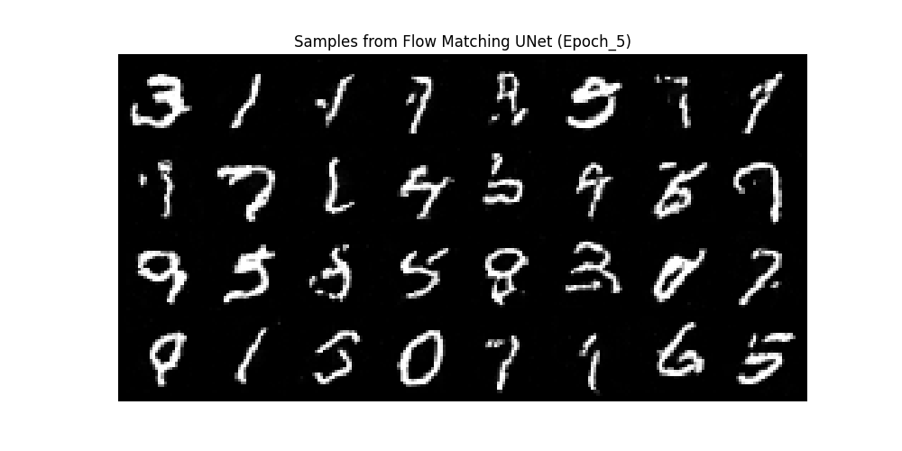
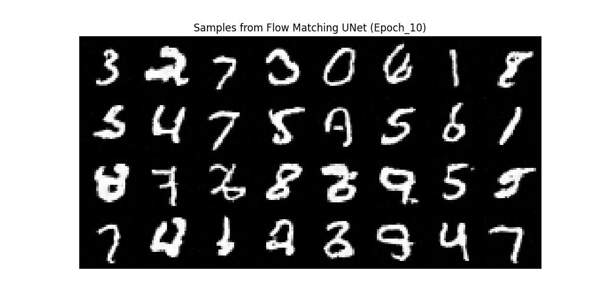
Bells & Whistles: A Better Time-Conditioned Model
The baseline time-conditioned UNet presented in Part 2.3 struggled to generate clear, artifact-free digits, even for epoch 10.
To narrow this performance gap without introducing explicit class labels, we aimed to improve the model by increasing its capacity and extending the training schedule.
We expanded the hidden dimension size (\(D\)) of the UNet from 64 to 128,
significantly increasing the network's parameter count and expressivity.
Furthermore, we extended the training duration from 10 to 50 epochs to allow the larger model sufficient time to converge.
The results below demonstrate a substantial qualitative improvement over the baseline.
The generated digits are significantly sharper, structurally more coherent, and exhibit fewer artifacts.
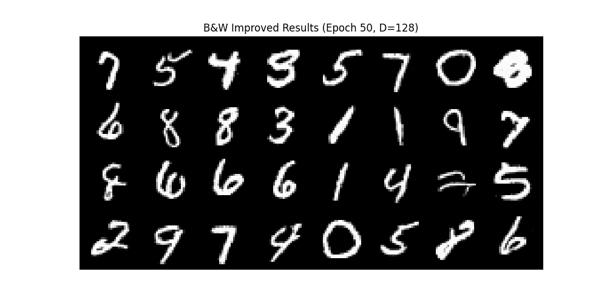
Improved Time-Conditioned Samples
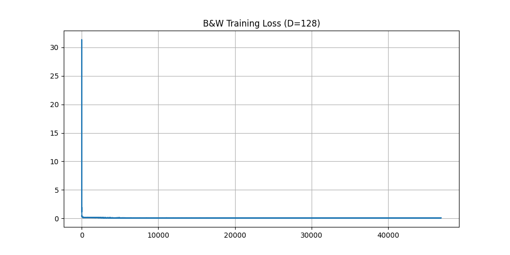
Training Loss (Improved Model)
2.5 Training the Class-Conditioned UNet
We trained the class-conditioned UNet and introduce a class dropout rate of \(p_{\text{uncond}} = 0.1\).
This mechanism randomly masks the class conditioning vector \(c\) during training, forcing the network to learn both conditional and unconditional flow generation to support Classifier-Free Guidance (CFG).
The training loss curve below shows an extremely rapid initial descent followed by a stable "flat" convergence.
This smoothness, compared to the volatility in Part 2.2, can be attributed to two factors:
Reduced Ambiguity: Conditioning on the class label \(c\) (90% of the time) significantly constrains the solution space. Predicting the velocity vector towards a known digit (e.g., "7") is a much easier optimization task with lower variance than predicting the velocity towards an unknown random digit.
Visualization Scale: The initial loss starts very high (~14) before plummeting to < 0.1.
This large vertical scale compresses the visual representation of the later epochs.
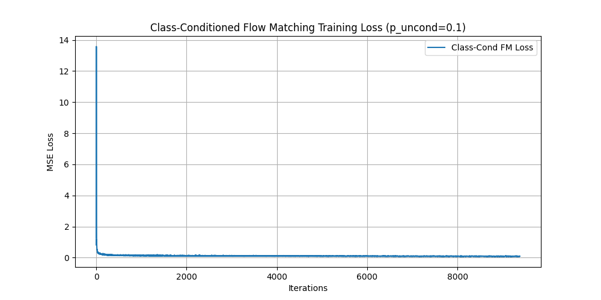
Training Loss (Class-Conditioned UNet)
2.6 Sampling with Class-Conditioning (CFG)
We utilized Classifier-Free Guidance (CFG) with a guidance scale of \(\gamma = 5.0\) to generate class-specific samples.
By extrapolating the difference between conditional and unconditional velocity predictions, CFG drives the generation trajectory towards high-density regions of the target class distribution, enhancing both sample quality and class adherence.
The visualization below displays four generated instances per digit class (rows 0-9) across training epochs.
While part of samples at Epoch 1 are noisy and lack definition, all results at Epoch 10 exhibit high structural coherence and distinct class features.
The accurate generation of specific digits confirms that the network has successfully learned to utilize the class conditioning vector \(c\) to control the generative process.
We investigated whether the exponential learning rate scheduler is strictly necessary for training the flow matching model.
The standard training starts with a high learning rate (\(1\text{e-}2\)) and decays it to refine convergence.
To compensate for removing the scheduler, we selected a lower fixed learning rate of \(1\text{e-}3\) throughout the entire training process .
All other configurations remained unchanged, including model architecture, batch size, and training epochs.
The model trained with a fixed learning rate achieves visual quality parity with the scheduler-based model before.
The digits remain sharp, distinct, and accurately conditioned on the class labels.
The loss curve confirms stable convergence, proving that while schedulers can help,
a well-tuned constant learning rate is sufficient for this task.
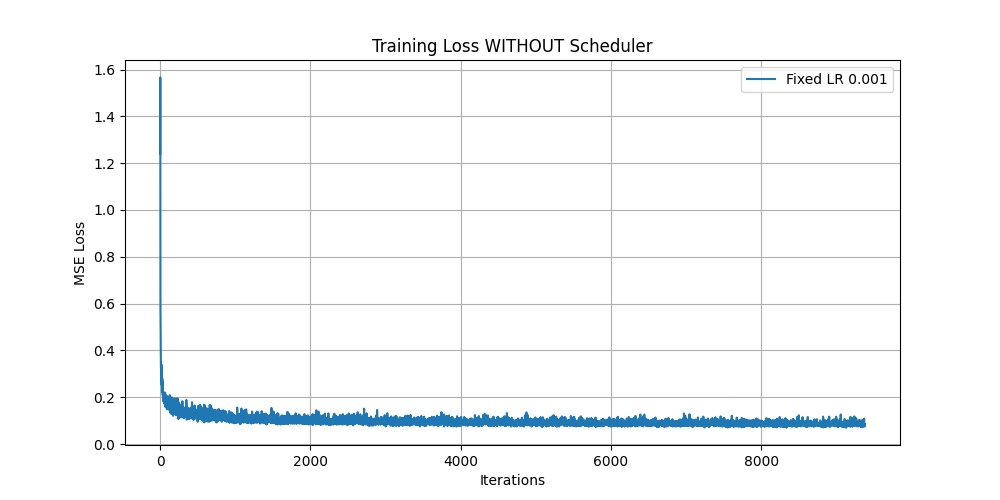
Loss Curve (No Scheduler)
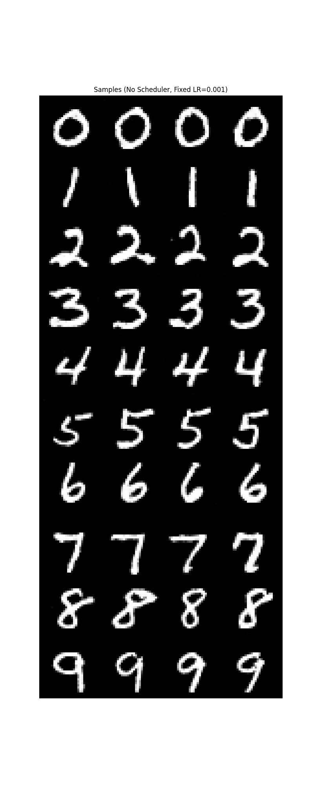
No Scheduler(Epoch 10)